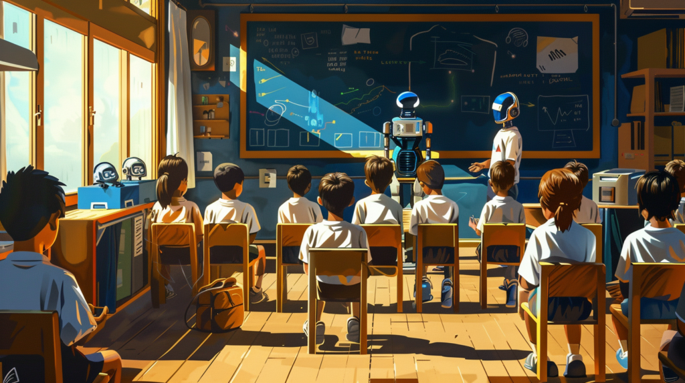

Oque é uma Inteligência Artificial?
Inteligência artificial, ou IA, é uma tecnologia que permite que computadores e máquinas simulem a capacidade de resolução de problemas e a inteligência humana.
A primeira IA
A inteligência artificial começou a ganhar forma na década de 1950, com a criação do termo na Conferência de Dartmouth (1956). A primeira IA notável foi o Logic Theorist, desenvolvido por , Allen Newell e Herbert A. Simon projetado para resolver teoremas matemáticos como um ser humano. Outro marco foi o Perceptron (1958), uma rede neural pioneira criada por Frank Rosenblatt
Embora limitada por hardware e algoritmos simples, essas inovações estabeleceram as bases para os avanços modernos em IA, demonstrando que máquinas poderiam simular o raciocínio humano.
inteligência artificial (IA) oferece inúmeras oportunidades, mas também traz desafios importantes
O uso de inteligência artificial (IA) no aprendizado tem gerado debates sobre seus impactos, tanto positivos quanto negativos. Embora a IA ofereça benefícios como personalização do ensino, feedback imediato e maior acessibilidade, ela também apresenta riscos que podem dificultar o aprendizado
Integração Consciente: A IA deve complementar, e não substituir, o ensino tradicional, com a presença ativa de professores para guiar e enriquecer o aprendizado.
Educação Crítica sobre Tecnologia: É essencial ensinar os alunos a usar as ferramentas de IA de forma responsável, promovendo autonomia e pensamento crítico
O equilíbrio entre inovação e ética é essencial para garantir que a IA beneficie a sociedade como um todo, minimizando os riscos e maximizando os impactos positivos